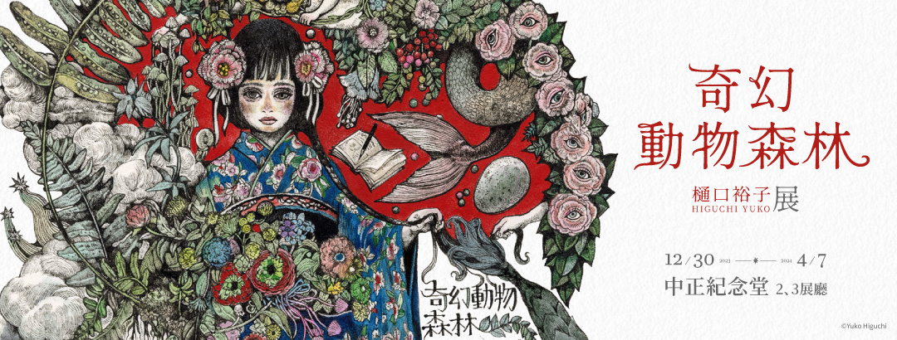

✶海外首站，集結日本巡迴展近千百件豐富展品一次欣賞。
✶可愛怪奇的細膩創作，獨特魅力讓人忍不住一看再看。
✶全新展覽主題，打造專屬台灣站特有的奇幻動物森林。
樋口 裕子
HIGUCHI
YUKO
畫家、藝術家。以東京為中心，持續舉辦創作活動。作品常以貓咪、鳥類、蘑菇等動植物作為主題，現實與幻想交錯而成的繪畫呈現，創作出樋口裕子獨有的世界觀。曾出版繪本「貓咪」系列、「小情書」、及畫集「樋口裕子畫集 CISRCUS」、「BABEL Higuchi Yuko Artworks」等數本經典著作，也吸引了多個知名品牌邀請合作，其中以2018年開始的GUCCI聯名系列受到許多人關注，近年則大量投入電影海報的作品創作。